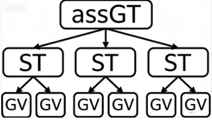
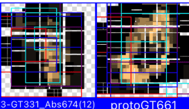
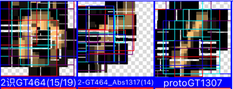

AI系列之《2026.02-03：GT/GV 自举与错位问题》

来源：HELIX_THEORY/手稿/assets/794_GT自举到GV层.png

来源：HELIX_THEORY/手稿/assets/798_0识别成1匹配率还高的问题.png

来源：HELIX_THEORY/手稿/assets/800_1识别成1的问题方案v2效果.png
来源：Note36.md
2 到 3 月，手稿持续提升识别准确度，深入调试 ST/GT 竞争浮现，加入显著度，并围绕 GT 自举 GV、ST 错位、GV 错位、GT 类比和切图实现反复回测。
错位问题说明视觉特征并不是静态符号，它依赖空间位置、比例、局部关系和对齐方式。GT 自举 GV 的尝试，是希望从更高层结构反推或组织更基础的视觉单元。
切图实现进一步把识别问题具体化：如何把图像切成既能保持整体关系，又能进入局部匹配的结构。这个阶段为 4 月的加权求和切图法做了直接铺垫。